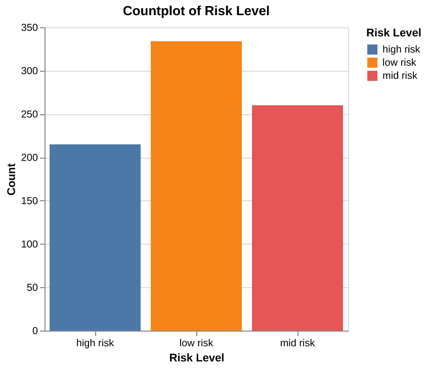
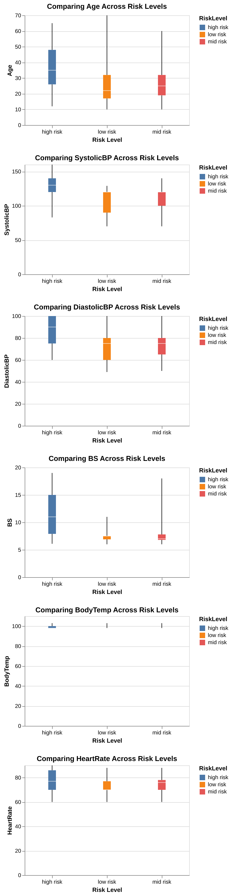

| count | mean | std | min | 25% | 50% | 75% | max |
|---|---|---|---|---|---|---|---|
| 809 | 29.6527 | 13.375 | 10 | 19 | 25 | 39 | 70 |
| 809 | 113.267 | 18.4067 | 70 | 99 | 120 | 120 | 160 |
| 809 | 76.4796 | 13.9469 | 49 | 65 | 80 | 90 | 100 |
| 809 | 8.68393 | 3.2567 | 6 | 6.9 | 7.5 | 8 | 19 |
| 809 | 98.6457 | 1.35903 | 98 | 98 | 98 | 98 | 103 |
| 809 | 74.4845 | 7.51122 | 60 | 70 | 76 | 80 | 90 |
| 809 | 0.852905 | 0.811044 | 0 | 0 | 1 | 2 | 2 |
Classification Model for identifying Maternal Health Risk
Shannon Pflueger, Nelli Hovhannisyan, Joseph Lim
Summary
In this project we are comparing multiple classification models to predict pregnant women’s maternal health risk as low, medium or high from their health data. Maternal health broadly refers to overall health of women during their pregnancy, child birth and their post-natal period (World Health Organization 2024). A variety of complications can arise during pregnancy, childbirth and soon after that result in maternal death. The World Health Organization defines maternal mortality as “the death of a woman whilst pregnant or within 42 days of delivery or termination of pregnancy, from any cause related to, or aggravated by pregnancy or its management, but excluding deaths from incidental or accidental causes” (World Health Organization 1992). Thus, maternal health risk refers to the approximate risk level of a woman’s health while pregnant or soon after birth. With our chosen model we aim to identify some key indicators that predict higher maternal health risk. In rural communities where it is costly and difficult to provide consistent medical care, having a method to predict maternal health risk from minimally invasive methods could be greatly beneficial in improving health outcomes for mothers and babies alike (Ahmed et al. 2020). After some initial exploration of classification models we settled on the Decision Tree algorithm for its easily interpretable model and relatively high accuracy score. Based on this Decision Tree model a key indicator of increased maternal health risk was blood sugar. The decision tree our model built based on the dataset suggests that blood sugar higher than 7.95 mmol/l is correlated with a high maternal health risk. However, the model does seem to struggle with classifying low vs. medium maternal health risk. While this is a great first step the model accuracy is not accurate enough to be used in a medical context yet. More research and modelling (perhaps with different models) should be done before deploying this technology in rural communities. Additionally, it should be noted that since this dataset contains health data only from a Pima Indians Diabetes Database the model have may learned a bias specific to unknown genetic factors present in this sample. Thus, a much larger dataset with a diverse sample set should be used to train the model before it is utilized in any communities.
Introduction
Maternal health remains a critical issue worldwide, especially in rural regions and among lower-middle-class families in emerging countries. The lack of access to proper healthcare, inadequate information about maternal care, and insufficient monitoring during pregnancy contribute to high maternal mortality rates (Say et al. 2014). The significance of timely interventions and constant monitoring during pregnancy cannot be overstated, as each moment is crucial to ensuring the health and safety of both the mother and the baby. This report investigates maternal health risks using exploratory data analysis and classification techniques such as Logistic regression, SVC, Naive Bayes, and Decision Tree to identify key factors that contribute to risk during pregnancy.
The primary question addressed in this project is: What are the key indicators that predict maternal health risks during pregnancy?
To answer this question, a dataset containing information on various non-invasive maternal health factors was used. Leading to the goal of the project which is to create a predictive model that can evaluate the risk factors associated with pregnancy.
Methods
About Data
This dataset was sourced from the Dua and Graff (2017). It was collected from rural areas of Bangladesh from various hospitals, community clinics, and maternal healthcare centers; each row in this dataset is health data from a pregnant woman from the Pima Indians Diabetes Database (Brownlee 2024). The dataset collects various non-invasive health data with a goal of predicting maternal health risk at the levels of high, medium, or low. Each row of the data represents the health data for a pregnant woman in rural Bangladesh. Classification for each observation in the dataset was done with help from Dr. Shirin Shabnam (Ahmed et al. 2020).
Column descriptions:
- Age: Age in years when a woman is pregnant.
- SystolicBP: Upper value of Blood Pressure in mmHg, another significant attribute during pregnancy.
- DiastolicBP: Lower value of Blood Pressure in mmHg, another significant attribute during pregnancy.
- BS: Blood glucose levels, in molar concentration, mmol/L.
- HeartRate: A normal resting heart rate in beats per minute.
- Risk Level: Predicted Risk Intensity Level during pregnancy considering the previous attribute.
Analysis
To answer our research question we explored several different machine learning models including: Gaussian Bayes, Logistic Regression, Decision Tree, and RBF-SVC, and compared the cross validation results to choose the best one. To accomplish this we used Van Rossum and Drake (2009) for our analysis, more specifically we used the following packages: Harris et al. (2020), VanderPlas (2018), McKinney (2010), Hunter (2007), and Pedregosa et al. (2011). We drop two rows from our dataset which contain data that is out of normal range (a heart rate of 7 beats per minute). This is clearly an error since humans on average have a heart rate between 60-100 bpm (American Heart Association 2024). Moreover, heart rate during pregnancy typically increases on average, for various reasons, though there is no clear upper limit defined to be normal (Coad and Frise 2021). Our dataset has a number of rows that seem to be duplicated, however, after some data exploration we have decided to keep these duplicated rows because we believe them to be from different people with the same data. Since there are only 5 columns with whole numbers and one column with an integer to only one decimal point we feel it is likely that multiple people had the same data. Additionally, we were able to check the csv file and see that the duplicate rows are far from each other rather than one after another, so we are postulating that they were indeed different individuals who happened to have the same age, blood pressure, body temperature, blood sugar, and risk level.
Results and Discussion
We began with a general exploration of our data. Based on the summaries from Table 1 and Table 2, we observe that there are no missing values, and all features, except for the target variable, are numeric.
| Column | Non-Null Count | Data Type |
|---|---|---|
| Age | 809 | int64 |
| SystolicBP | 809 | int64 |
| DiastolicBP | 809 | int64 |
| BS | 809 | float64 |
| BodyTemp | 809 | float64 |
| HeartRate | 809 | int64 |
| RiskLevel | 809 | object |
Although the dataset has a relatively small number of observations (Table 3), it should still be sufficient for initial modeling efforts.
| Metric | Value |
|---|---|
| Rows | 809 |
| Columns | 7 |
From the Figure 1, we can observe that the data is relatively balanced, with the “high risk” category having the fewest observations and the “low risk” category having the most.

Let’s discuss some of the relationships observed in the heatmap of the dataset seen in Figure 2:
- The “Risk Level,” our target variable, shows a noticeable correlation with “Blood Pressure.” This suggests that individuals with higher or lower blood pressure levels may fall into distinct risk categories. As a result, “Blood Pressure” could be an important predictor in the later stages of our analysis.
- The systolic (upper) and diastolic (lower) blood pressure values exhibit a strong correlation, which is expected since both are closely related physiological metrics. Although we might have considered dropping one of them, the correlation remains below 0.8, so we will retain both, as they may still provide valuable insights when combined with other features.
We can see from the boxplots (Figure 3) that women in the high-risk group generally have higher values across all our features. For example, older women are more likely to be classified as high risk. Additionally, the high-risk group shows a wider range for upper blood pressure and blood glucose levels, with the median value being slightly higher than that of the other groups. Another observation here is that there are quite a lot of outliers for the low risk category.

Model Comparison
In choosing a classifier model we tried several including: Gaussian Bayes, Logistic Regression, Decision Tree, RBF-SVC. We also included a Dummy Classifier to compare our model to. In Table 4 you can see that the Gaussian Bayes scored the lowest, with a validation score of 0.598 (+/- 0.033). Next was the Logistic Regression model with a validation score of 0.611 (+/- 0.048), close behind was the RBF-SVM model with a validation score of 0.699 (+/- 0.060). And finally, the best performing model was the Decision Tree Classifier with a validation score of 0.822 (+/- 0.048). After choosing the Decision Tree as our model we performed hyperparamter tuning with RandomSearchCV to choose the best max depth, and the split criterion. From this search we found the best validation score with a max depth of 14, and the split criterion entropy.
| Models | fit_time | score_time | test_score | train_score |
|---|---|---|---|---|
| Dummy Classifier | 0.002 (+/- 0.001) | 0.001 (+/- 0.000) | 0.413 (+/- 0.006) | 0.413 (+/- 0.001) |
| Gaussian Bayes | 0.003 (+/- 0.001) | 0.001 (+/- 0.000) | 0.598 (+/- 0.033) | 0.607 (+/- 0.004) |
| Decision Tree | 0.005 (+/- 0.004) | 0.001 (+/- 0.000) | 0.822 (+/- 0.048) | 0.930 (+/- 0.004) |
| RBF SVM | 0.018 (+/- 0.003) | 0.003 (+/- 0.000) | 0.699 (+/- 0.060) | 0.718 (+/- 0.006) |
| Logistic Regression | 0.007 (+/- 0.005) | 0.001 (+/- 0.000) | 0.611 (+/- 0.048) | 0.616 (+/- 0.009) |
Reporting Test Score
After finding the best hyperparameters for the Decision Tree, we moved on to scoring our model using the testing data to ascertain how well the Decision Tree performs on unseen data. Based on the scoring of Decision Tree model on the test data, the model has an accuracy of 84% which is fairly high, but still leaves room for improvement. Figure 4 shows the confusion matrix of the decision tree on the test data. Firstly, the model has correctly classified a significant number of high-risk instances (48), but there are some false negatives where high-risk patients were classified as mid-risk or low-risk. This could be concerning in a clinical setting because these patients may not receive the urgent care they need. Subsequently, the model was able to identified most low-risk patients (61), but some false negatives still occur. These cases may not be as critical in a clinical context, but improving the accuracy for low-risk predictions could further optimize care. Lastly, the model also performed well in predicting mid-risk patients (62), with relatively fewer false positives. However, these false negatives could also mean that some mid-risk patients were categorized as low-risk, which may lead to under-treatment.
In order to answer our primary research question we have identified the first few leaves of our Decision Tree model (Figure 5). Analyzing all levels of the tree is overwhelming and may not provide actionable insights. Focusing only on the top levels should provide us a rough understanding of the most impactful variables that our model has identified. Based on the first three levels of the decision tree, the root node of your tree splits on Blood Sugar (BS) with a threshold of 7.95. This indicates that BS is the most important variable in predicting the maternal health risk classification, as it is the first and most influential split in the tree. The next key split (on the left branch of the tree) is SystolicBP (Systolic Blood Pressure) with a threshold of 132.5, suggesting it is the second-most important variable. On the right subtree, the next key split is SystolicBP (Systolic Blood Pressure) with a threshold of 135.0, is also used to refine classifications, particularly for mid-risk predictions. Blood Sugar (BS) stands out as the key indicator for maternal health classification since it governs the initial split and directs subsequent branching based on its values.
Conclusion
The Decision Tree model performed fairly well, however given the intention of the data, which is to gather health data of pregnant women in rural communities and predict their health risk so a doctor can assess them in person, a much higher score is needed. Specifically, a model that minimizes false negatives to zero would be necessary since we wouldn’t want to have anyone falsely predicted as mid risk when they are high risk and need to see a doctor. Thus, we recommend a more diverse set of data be collected from the communities that would implement a project such as this. Additionally, more exploration of the best model types as well as feature engineering to give the best possible model performance should be done.
References
Ahmed, M., M. A. Kashem, M. Rahman, and S. Khatun. 2020. “Review and Analysis of Risk Factor of Maternal Health in Remote Area Using the Internet of Things (IoT).” Lecture Notes in Electrical Engineering 632.
American Heart Association. 2024. “Target Heart Rates Chart.” https://www.heart.org/en/healthy-living/fitness/fitness-basics/target-heart-rates.
Brownlee, J. 2024. “Pima Indians Diabetes Database.” https://raw.githubusercontent.com/jbrownlee/Datasets/master/pima-indians-diabetes.names.
Coad, F., and C. Frise. 2021. “Tachycardia in Pregnancy: When to Worry?” Clin Med (Lond) 21 (5): e434–37. https://doi.org/10.7861/clinmed.2021-0495.
Dua, Dheeru, and Casey Graff. 2017. “UCI Machine Learning Repository.” University of California, Irvine, School of Information; Computer Sciences.
Harris, Charles R, K Jarrod Millman, Stéfan J van der Walt, Ralf Gommers, Pauli Virtanen, David Cournapeau, Eric Wieser, et al. 2020. “Array programming with NumPy.” Nature 585 (7825): 357–62. https://doi.org/10.1038/s41586-020-2649-2.
Hunter, J. D. 2007. “Matplotlib: A 2D Graphics Environment.” Computing in Science & Engineering 9 (3): 90–95. https://doi.org/10.1109/MCSE.2007.55.
McKinney, Wes. 2010. “Data Structures for Statistical Computing in Python.” In Proceedings of the 9th Python in Science Conference, edited by Stéfan van der Walt and Jarrod Millman, 56–61. https://doi.org/10.25080/Majora-92bf1922-00a .
Pedregosa, F., G. Varoquaux, A. Gramfort, V. Michel, B. Thirion, O. Grisel, M. Blondel, et al. 2011. “Scikit-learn: Machine Learning in Python.” Journal of Machine Learning Research 12: 2825–30.
Say, L., D. Chou, A. Gemmill, Ö. Tunçalp, A. B. Moller, J. Daniels, A. M. Gülmezoglu, M. Temmerman, and L. Alkema. 2014. “Global Causes of Maternal Death: A WHO Systematic Analysis.” Lancet Global Health 2 (6): e323–33. https://doi.org/10.1016/S2214-109X(14)70227-X.
Van Rossum, Guido, and Fred L. Drake. 2009. Python 3 Reference Manual. Scotts Valley, CA: CreateSpace.
VanderPlas, Jake. 2018. “Altair: Interactive Statistical Visualizations for Python.” Journal of Open Source Software 3 (7825, 32): 1057. https://doi.org/10.21105/joss.01057.
World Health Organization. 1992. International Classification of Diseases and Related Health Problems. Geneva: World Health Organization.
———. 2024. “Maternal Health.” https://www.who.int/health-topics/maternal-health#tab=tab_1.